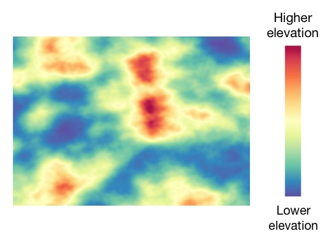

Your objective in this study is to analyze color maps depicting terrain height.
In this map, higher elevations are shown in Red, whereas low elevation is depicted in Blue. Essentially, color variation in the map tells you about differences in elevation.

| Next |